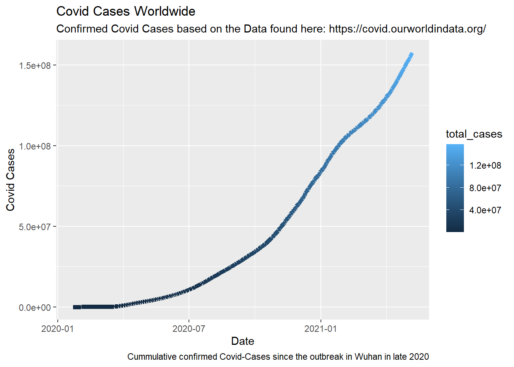

04 Data Visualization
2021-04
install.
Challenge #1
Cummulative Confirmed Covid Cases Worldwide
knitr::opts_chunk$set(message=FALSE,warning=FALSE, cache=TRUE)
covid_data_tbl <- read_csv("https://covid.ourworldindata.org/data/owid-covid-data.csv")##
## -- Column specification --------------------------------------------------------
## cols(
## .default = col_double(),
## iso_code = col_character(),
## continent = col_character(),
## location = col_character(),
## date = col_date(format = ""),
## icu_patients = col_logical(),
## icu_patients_per_million = col_logical(),
## hosp_patients = col_logical(),
## hosp_patients_per_million = col_logical(),
## weekly_icu_admissions = col_logical(),
## weekly_icu_admissions_per_million = col_logical(),
## weekly_hosp_admissions = col_logical(),
## weekly_hosp_admissions_per_million = col_logical(),
## tests_units = col_character()
## )
## i Use `spec()` for the full column specifications.## Warning: 45734 parsing failures.
## row col expected actual file
## 5294 icu_patients 1/0/T/F/TRUE/FALSE 215.0 'https://covid.ourworldindata.org/data/owid-covid-data.csv'
## 5294 icu_patients_per_million 1/0/T/F/TRUE/FALSE 23.872 'https://covid.ourworldindata.org/data/owid-covid-data.csv'
## 5294 hosp_patients 1/0/T/F/TRUE/FALSE 856.0 'https://covid.ourworldindata.org/data/owid-covid-data.csv'
## 5294 hosp_patients_per_million 1/0/T/F/TRUE/FALSE 95.044 'https://covid.ourworldindata.org/data/owid-covid-data.csv'
## 5295 icu_patients 1/0/T/F/TRUE/FALSE 219.0 'https://covid.ourworldindata.org/data/owid-covid-data.csv'
## .... ......................... .................. ...... ...........................................................
## See problems(...) for more details.covid_data_world_tbl <- covid_data_tbl%>%
filter(iso_code== 'OWID_WRL')
covid_cases_world_tbl<- covid_data_world_tbl%>%
select(date,total_cases)
covid_cases_world_tbl %>%
ggplot(aes(x = date, y = total_cases, color = total_cases))+
geom_line(size=2)+
labs(
title = "Covid Cases Worldwide",
subtitle = "Confirmed Covid Cases based on the Data found here: https://covid.ourworldindata.org/",
x = "Date",
y = "Covid Cases",
caption = "Cummulative confirmed Covid-Cases since the outbreak in Wuhan in late 2020"
)
Covid Mortality Map
library(tidyverse) # Main Package - Loads dplyr, purrr, etc.
library(rvest) # HTML Hacking & Web Scraping
library(xopen) # Quickly opening URLs
library(jsonlite) # converts JSON files to R objects
library(glue) # concatenate strings
library(stringi) # character string/text processing
library(ggplot2)
library(maps)
library(mapdata)
covid_data_tbl <- read_csv("https://covid.ourworldindata.org/data/owid-covid-data.csv")
#Mortality Rate
covid_data_selection <- covid_data_tbl%>%
select(location,total_cases,total_deaths)%>%
rename(region=location)%>%
group_by(region)%>%
mutate(region = case_when(
region == "United Kingdom" ~ "UK",
region == "United States" ~ "USA",
region == "Democratic Republic of Congo" ~ "Democratic Republic of the Congo",
TRUE ~ region
)) %>%
distinct()
covid_mort_data <- covid_data_selection%>%
summarise(mortality=max(total_deaths, na.rm = TRUE) / max(total_cases, na.rm = TRUE))
world_map <- map_data("world")
#Merging Data
covid_mort_map <- merge(covid_mort_data, world_map, by = 'region')
#Map
ggplot(covid_mort_map, aes(map_id = region)) +
geom_map(aes(fill = mortality), map = world_map) +
expand_limits(x = world_map$long, y = world_map$lat) +
scale_fill_gradient(low='blue', high='red')